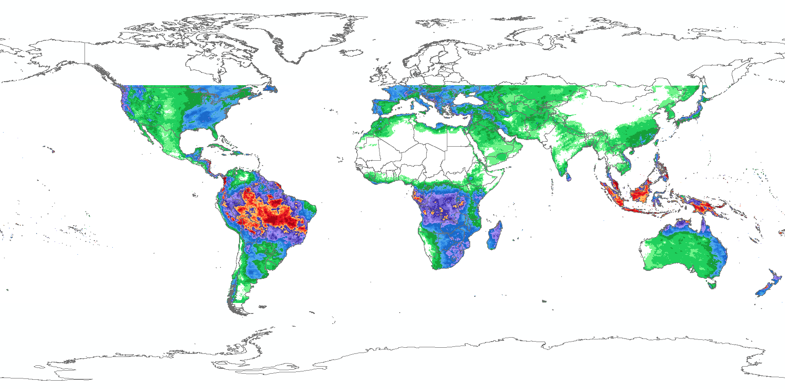

CHIRPS
CHIRPS#
Climate Hazards Group InfraRed Precipitation with Station data (CHIRPS) from Climate Hazard Center (CHC), Department of Geography, University of California Santa Barbara - https://www.chc.ucsb.edu/data/chirps is a 35+ year quasi-global rainfall data set. Spanning 50°S-50°N (and all longitudes) and ranging from 1981 to near-present, CHIRPS incorporates CHC’s in-house climatology, CHPclim, 0.05° resolution satellite imagery, and in-situ station data to create gridded rainfall time series for trend analysis and seasonal drought monitoring.
To support the activity, GOST utilise CHIRPS’s monthly rainfall data.
About the data
Characteristic |
Description |
|---|---|
Function |
Displays daily, pentad, dekad, monthly, 2-monthly, 3-monthly and annual rainfall data |
Variable |
Total rainfall |
Geographic coverage |
Global 50N-50S, 180W-180E |
Spatial resolution |
0.05 degree ~ 5.6 km at equator |
Temporal resolution |
daily, pentad, dekad, monthly, 2-monthly, 3-monthly and annual |
Format |
GeoTIFF, BIL and NetCDF |
Unit |
Total mm for given time step, mm/pentad, mm/month, etc. |
Reference |
Symbology
The threshold and the symbology for the monthly rainfall in milimeters can follow below colorcodes and image.
Class |
Hex |
RGB |
|---|---|---|
0 - 5 |
|
rgb(255, 255, 255) |
5 to 10 |
|
rgb(105, 245, 133) |
10 to 25 |
|
rgb(0, 209, 87) |
25 to 50 |
|
rgb(0, 161, 51) |
50 to 75 |
|
rgb(74, 166, 240) |
75 to 100 |
|
rgb(36, 133, 232) |
100 to 150 |
|
rgb(18, 102, 204) |
150 to 200 |
|
rgb(163, 140, 247) |
200 to 250 |
|
rgb(115, 97, 214) |
250 to 300 |
|
rgb(64, 43, 173) |
300 to 350 |
|
rgb(255, 191, 84) |
350 to 400 |
|
rgb(255, 94, 36) |
400 to 500 |
|
rgb(230, 10, 20) |
500 and above |
|
rgb(168, 0, 10) |

Data access
Official download link from CHIRPS available from: https://data.chc.ucsb.edu/products/CHIRPS-2.0/
CHIRPS monthly data also available at DEC S3: s3://wbgdecinternal-ntl/climate/data/chirps